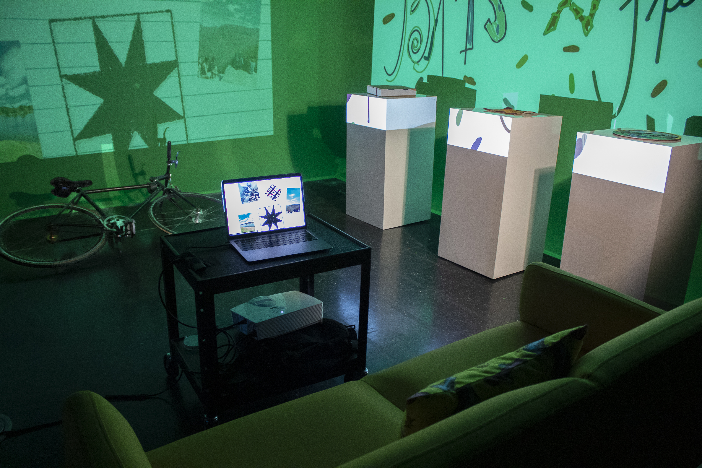

Bits and Pieces

This collaborative project, created by Amber, Daniel, Jameson, and Mackensie, is an accumulation of pieces and experiences of each artist. Each member created art from their own community. As aforementioned, Amber chose friendship/summer camp, Daniel chose hiking, Jameson chose bicycling, and Mackensie chose quilting. Programs such as Adobe Illustrator, Adobe Photoshop, Procreate, Photopea, Adobe After Effects, and Inkscape were used to create the pieces. The team aided Jameson in coding the website. Jameson, with Daniel assisting, created a looping audio that accompanied the space and set an upbeat atmosphere. The audio is a mix of ambient nature sounds with mixed synths created on BeepBox. The natural internet separates individuals, but this piece of the internet we have created connects. There is tension between the real and the virtual, bringing real space and artifacts into an online space. Through this installation, we captured our own individual hobbies, and through these hobbies we can experience freedom within our communities. These pieces were transformed into more than solo hobbies. The notebook paper as the background of the website relays a scrapbook of our ideas and artifacts. The digital pieces are displayed on the website in a fashionable but random layout, with no rhyme or reason to the order of the photos except for the triptych. The website layout was inspired by Molly Soda's Desktop Dump series.
Bits and Pieces is an interactive installation including digital pieces and physical artifacts. In this project, two projectors display separate pieces: one showcasing our title, and the other connected to a computer on a cart showcasing the interactive website. Three pedestals holding objects featured in the website are lit by spotlights, and a bicycle lies on the floor as the fourth connection to the website. One collaborator, Amber, displayed a clay model pizza representing sharing community over food and relating to her found community at summer camp. Another, Mackensie, presents a Sawtooth Star quilt square, representing the community and traditional quilting practices. Jameson brings in his bike, leaving it in front of the website like he just jumped off of it. Finally, Daniel brings in a hand-painted wooden mountain piece representing the community in hiking. A couch sits in front of a cart holding a laptop. Viewers are invited to sit, scroll, and click on the website with a mouse as it is projected in front of them. The website was a showcase of works by the creators of the project. Clicking on the pieces expands them to a larger size for better viewing.